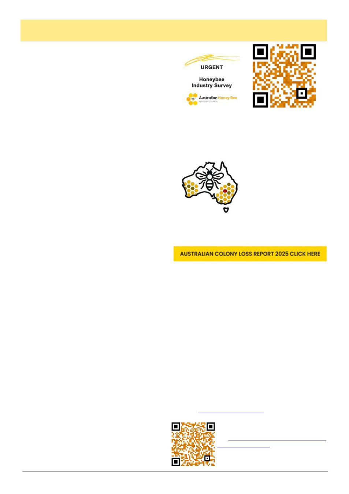

June 2026
35
AHBIC Updates, cont’d
with sample collection activities. Sampling was con-
ducted between October and November 2025, with sam-
ples collected from importers and retail sources repre-
senting 95% of the imported honey (excluding NZ).
Laboratory analysis was conducted by the National
Measurement Institute.
Testing included both:
•
the existing Imported Food Inspection Scheme
honey testing panel (current federal mandated
tests for imported honey) which includes C4 car-
bon isotope test, moisture content and reducing
sugars, and
•
a Nuclear Magnetic Resonance (NMR)-based
honey profiling method (which generates a chem-
ical fingerprint of honey samples, compares sam-
ples with an international reference database and
identifies atypical profiles).
AHBIC advocated for additional test assays to be
included but were unable to secure the support from
DAFF, however additional samples were taken to allow
for further analysis.
What was the testing looking at:
Australia‘s current government importation testing
protocols utilise the C4 carbon isotope honey test,
which we have demonstrated through AHBIC‘s Honey
Fighting Fund initial testing, to be insufficient in detect-
ing basic global fraudulent methods. The DAFF pilot
survey was designed to help substantiate AHBIC claims
through comparing the panel test results with the NMR
profiling.
Survey Results
All samples passed the government mandated panel
of tests. However, a number of samples were identified
through NMR as suspected to have foreign sugars pre-
sent. These results align with the previous AHBIC tests
results and has highlighted the problem to government
through this independent testing.
Potential Industry Outcomes
The DAFF survey has demonstrated the potential
weakness of the existing testing assays. DAFF have
committed to working with AHBIC to evaluate alterna-
tive or additional testing to strengthen our boarder pro-
tection.
Results have been shared with the participating state
food regulators and coordinated engagement with par-
ticipating businesses is underway to communicate re-
sults with importers.
DAFF is now considering how best to implement the
findings of the survey. AHBIC will continue to put
pressure on the department for change, but it is a slow
process. DAFF will continue working collaboratively
with industry, state and territory regulators, technical
experts and international counterparts to further evaluate
available analytical methods that may strengthen Aus-
tralia‘s approach to detecting imports of adulterated
honey.
AHBIC Survey
AHBIC is urgently planning for crisis talks with
government and we want to ensure industry information
is properly represented across Australia. The more bee-
keepers who take part, the stronger our collective voice
becomes.
The Australian Colony Loss
Survey provides valuable hive
management and hive health data
for the beekeeping industry.
This survey provides critical
data to support and guide the
Australian beekeeping industry
as it navigates an increasingly
complex set of challenges. Cov-
ering key issues such as Varroa mite management,
queen health and failure, seasonal pressures, and broad-
er biosecurity risks, the survey offers a comprehensive
snapshot of current industry conditions.
Importantly, more beekeeper participation in the
Australian Colony Loss Survey is the key to making the
survey as valuable as possible to all stakeholders.
AHBIC recently hosted a short industry survey
which was useful in capturing a snapshot in time of bee-
keepers who have considered exiting industry, we are
utilising that data to advocate to government for action-
able change in the coming weeks. Although the survey
results are important, they are being used in the short
term to give us clear industry situational awareness and
data to share with government.
AHBIC is still urging Australian beekeepers to com-
mit to the Australian Colony Loss Survey in 2026 to
make sure all the important industry matters are cap-
tured and recorded now and into the future.
AHBIC will be playing a key role in taking the Aus-
tralian Colony Loss Survey forward in 2026. We are
looking forward to implementing a steering committee
and taking feedback to address industry concerns, new
ideas or questions to be added and any changes industry
stakeholders may have moving forward. Please reach
out to bianca@honeybee.org.au for questions you may
have.
AgriFutures Honeybee & Pollination Pan-
el; Commercial Honey Producers and
Submissions are now being accepted.
Submissions close at 12:00PM 20 July
2026 (AEST)
(Continued from page 34)